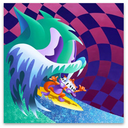
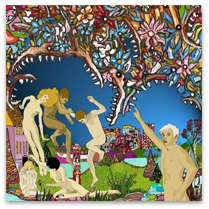
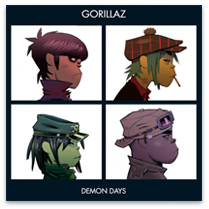

-

MGMT
Congratulations
Recording the follow-up to your critically-acclaimed debut album has to be a nerve-wracking affair. As a band, do you go with the same sound/formula you used on the first record? On MGMT’s sophomore album Congratulations, they successfully manage to do both.
-
LCD Soundsystem
This is Happening
If This Is Happening does end up being the final LCD Soundsystem release, Murphy certainly picked the right way to end it. “Home” hints at lyrical retrospection while adopting a musical collage that sums up the album, if not LCD’s three full-length releases, fittingly.
-

of Montreal
Skeletal Lamping
Kevin Barnes said about the title: "This record is my attempt to bring all of my puzzling, contradicting, disturbing, humorous...fantasies, ruminations and observations to the surface, so that I can better dissect and understand their reason for being in my head. Hence the title, Skeletal Lamping."
-

Gorillaz
Demon Days
Demon Days is the second studio album by British band Gorillaz, released in May 2005. The album features contributions from De La Soul, Neneh Cherry, Martina Topley-Bird, Roots Manuva, MF DOOM, Ike Turner, Bootie Brown of the Pharcyde, and Dennis Hopper.